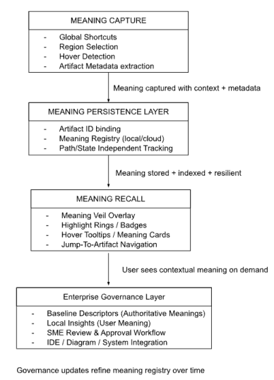
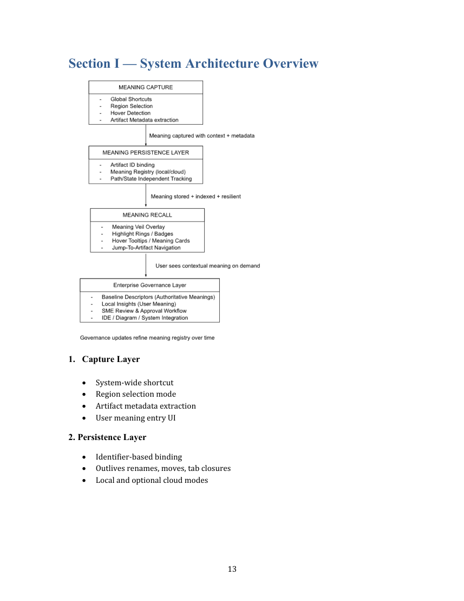

Executive Summary ........................................................................................................................ 3
Section A — The Meaning Gap in Modern Computing ......................................................... 4
Section B — Introducing Meaning Control™: The Missing Digital Primitive ................ 5
Section C — Meaning-as-a-Service (MaaS) ............................................................................. 7
Section D — FirstLook™ (Desktop + Browser + Screen Meaning Layer) ........................ 9
Section E — FirstLook for Code™ (Enterprise/IDE Meaning Layer) ............................ 10
Section F — Unified Vision ....................................................................................................... 10
Section G — Why This Has Never Been Solved Before ? .................................................. 11
Section H — Why Now? ............................................................................................................. 12
Section I — System Architecture Overview ............................................................................ 13
Section J — Cross-Surface Meaning Lifecycle ..................................................................... 14
Section K — IP Positioning ....................................................................................................... 15
Section L — Conclusion ............................................................................................................. 15
Executive Summary
Computers remember everything— paths, pixels, processes, logs — yet remember none of the meaning behind our actions.
They store files, render screens, execute code, and track history — but none of this tells us why anything exists, what it represents, or how it relates to our intent.
Meaning Control™ introduces a missing digital primitive: a universal meaning layer that sits above applications, operating systems, browsers, and codebases.
Delivered through the architectural model Meaning-as-a-Service (MaaS), this layer behaves like cognition’s missing counterpart in software — a memory for context, rationale, and purpose enabling:
• Users to add meaning anywhere — files, tabs, screen regions, diagrams, code
artifacts • Systems to store and recall meaning separate from native metadata • Enterprises to govern meaning consistently across software ecosystems • Developers to consume meaning automatically within IDEs, graphs, and
documentation
The Meaning Layer manifests through two surface embodiments:
1. FirstLook™ — the OS/browser/screen meaning layer for everyday computing. 2. FirstLook for Code™ — the enterprise/IDE meaning layer that attaches
governed semantic context to software artifacts.
Together, these form a unified ecosystem: Meaning Control™ — the missing contextual substrate of the digital world.
Section A — The Meaning Gap in Modern Computing 1. Computers Store Data, Not Intent
Computers excel at storing and retrieving state. But humans navigate the world through meaning:
• “Why did I open this folder?” • “What was I doing here last night?” • “What does this tab represent?” • “What does this code module actually do?” No OS, browser, or productivity tool solves this. People lose context every day — costing time, breaking flow, and increasing cognitive load. 2. AI Can Predict, But It Cannot Preserve Meaning
AI models summarize and infer, but they do not anchor meaning to actual items on your device.
Meaning Control™ provides a persistent, verifiable, user-defined meaning layer — the foundation AI systems currently lack.
3. The Cognitive Cost of Context Loss
Industry studies consistently show:
• Up to 40% of productivity loss comes from re-establishing context • Engineers spend 50–80% of time rediscovering meaning behind code • Users reopen tabs with no recall of why they saved them • UI surfaces become opaque over time • Meaning is the most valuable human signal - and today’s computing stack entirely ignores it. 4. Micro-Scenarios that happen to All of Us
• Scenario 1 — Desktop You return to a folder named “Old_Archive_FINAL_3.” You no longer remember what it contains, why it mattered, or which subfolder held the key work. • Scenario 2 — Browser You revisit your browser the next morning and see 12 tabs open — with no clue what “Model Comparison Chart” meant to you at the time.
• Scenario 3 — Image / Screen Region You stare at a diagram and ask: “What does this box represent again?” You may recall — but the computer cannot help you. • Scenario 4 — Codebase You open a legacy program name like X190TRN or calcEngine_v12. Unless someone told your or you already knew it, it conveys nothing about its purpose at the first contact.
These are not interface issues. These are meaning failures.
Section B — Introducing Meaning Control™: The Missing Digital Primitive
A wide range of tools partially address fragments of the aforementioned problem, however : they are silo-specific
• lack in-place meaning recall • cannot attach meaning to arbitrary screen regions • do not survive artifact lifecycle changes (rename, move, close, reshape) • offer no governed descriptors, baselines, or meaning lineage • cannot unify human-authored meaning with AI-derived meaning • operate on content, not context; structure, not intent In summary: utilities manipulate files; the Meaning Layer defines a new architectural primitive. It enables any digital artifact — regardless of application, format, or surface — to carry user-assigned or governed meaning that persists across time, devices, and workflows. Core vision: Any digital object should be capable of carrying user-assigned or governed meaning, independent of the system that displays it.
Meaning Control™ delivers this through three foundational capabilities:
1. Meaning Capture
Attach descriptors, insights, metadata, or intent to:
• files, folders, and desktop items • browser tabs and ephemeral web contexts • arbitrary screen regions • legacy mainframe or terminal surfaces (e.g., CICS) • diagrams, charts, and images • software and code artifacts
Meaning is captured at the exact moment of relevance — where intent is freshest.
2. Meaning Persistence
Meaning becomes durable and portable. It survives:
• renames, movement, and UI reorganization • tab closure and reopening • application changes • device transitions
In effect, meaning becomes the artifact’s semantic shadow — always following it, never dependent on how or where it appears.
3. Meaning Recall
Users can:
• reveal overlays (Meaning Veil™ / Meaning Vision™) • visually inspect meaning via highlights, rings, or badges • search their meaning archive • click an entry to restore context instantly
Recall re-establishes the why behind the what — reconnecting the user to intent, purpose, and workflow state.
The Meaning Veil™ / Meaning Vision™, an overlay for the digital surface, presents meaning visually using synthetic overlays.
Section C — Meaning-as-a-Service (MaaS)
Meaning Control™ is delivered through a modular, cloud-ready, adapter-driven architecture that abstracts meaning into a first-class system capability. MaaS provides the underlying infrastructure that allows any device, any application, and any workflow to attach, store, retrieve, and visually surface contextual meaning — without altering the artifact itself.
Unlike traditional metadata systems or application-specific annotations, MaaS operates externally and universally. It becomes a semantic shadow layer for the entire digital environment.
What MaaS Enables
• Attach meaning without modifying artifacts Files, folders, browser tabs, code modules, diagrams, images, and arbitrary screen regions remain untouched. Meaning is stored externally but behaves as if native. • Store meaning centrally and durably Meaning can be persisted locally or in a cloud registry, survives renaming and relocation, and synchronizes across devices. • Retrieve meaning across surfaces and workflows Whether working on the desktop, in a browser, inside an IDE, or viewing a legacy terminal, meaning recall works consistently. • Operate independently of OS or application vendors No system hooks or privileged APIs are required; MaaS overlays itself on top of the existing UX stack.
Core Modules of MaaS
1. Meaning Capture Engine
Detects user intent to assign meaning — via shortcuts, clicks, region selection, hover-dwell, gestures, or voice. Extracts contextual metadata, generates artifact identifiers, and binds meaning appropriately.
2. Meaning Storage & Index
Central registry mapping artifact identifiers to descriptors, insights, and semantic context. Supports vector-based search, lifecycle tracking, and integrity validation.
3. Meaning Recall Engine
Restores meaning on demand:
• reveals overlays • highlights artifacts • displays descriptors/insights • jumps directly to the target item • rebuilds context even if the artifact moved or changed state
4. Meaning Veil™ (Visual Overlay Layer)
A system-level ephemeral overlay that visually exposes meaning across the digital surface. This includes badges, highlight rings, bounding boxes, tooltip cards, and cluster views.
5. Enterprise Governance Extensions
For FirstLook™ for Code and enterprise systems:
• baselining and versioning of descriptors • SME and reviewer workflows • source-of-truth meaning repositories • integration with codebases, diagrams, and modeling tools
6. IDE / Browser / OS Adapters
Adapter modules interfacing the meaning layer with popular environments:
• IDEs (VS Code, IntelliJ, Eclipse) • Browsers (Safari, Chrome, Edge) • OS surfaces (Windows, macOS, Linux, mobile) These adapters allow MaaS to operate everywhere without deep integration.
7. AI Meaning Assist
AI engines that augment meaning capture and governance:
• summarize code artifacts • detect relationships between items • propose baseline descriptors • cluster related meanings • validate or refine user-submitted insights
Two Manifestations, One Core System
Meaning Control™ underpins two sibling products, each powered by MaaS:
1. FirstLook™ (Desktop, Browser, Region)
For everyday personal computing:
• add meaning to files, tabs, screens, images, maps, dashboards • reveal meaning visually • restore lost context instantly
2. FirstLook for Code™
For enterprise and engineering environments:
• baselined descriptors for code artifacts • governed insights and SME-approved meanings • IDE-native contextual overlays • meaning-aware diagrams and dependency graphs
Both products share the same cloud-ready meaning infrastructure, giving MaaS the ability to unify personal and enterprise meaning into a single universal layer.
Section D — FirstLook™ (Desktop + Browser + Screen Meaning Layer)
A non-invasive, OS-independent system that enables:
1. Desktop meaning
Assign meaning to files, folders, icons — even when they move or rename.
2. Browser tab meaning
Capture meaning that survives tab closures and restores context when reopened.
3. Region-level meaning
Select an area of an image, diagram, or legacy interface (e.g., CICS), and assign meaning to that region.
4. Meaning Veil™ overlay
Reveal all meaning on the screen using a universal shortcut. Hover to see context. Click to jump into details.
5. No integrations required
Runs as a companion layer — no OS privileges needed.
The Meaning Veil™ acts as a universal semantic canvas over the user’s digital world.
Section E — FirstLook for Code™ (Enterprise/IDE Meaning Layer)
A governed meaning framework for codebases and engineering systems, which also solves institutional knowledge decay.
1. Canonical artifact identification
Each program, table, API, job, or component receives a persistent meaning profile.
2. SME-approved baseline descriptors
Human-validated summaries that define the official meaning.
3. Local insights
Developers add personal contextual notes, visible only to them unless promoted.
4. IDE Alias View
Explorer trees and diagrams show canonical names with attached meanings (hover to reveal insights).
5. Diagram augmentation
Mermaid diagrams, dependency graphs, architecture diagrams — all enriched with contextual meaning from the meaning registry.
This is the world’s first semantic control layer for software systems.
Section F — Unified Vision
A single meaning layer that spans personal computing and enterprise systems creates a coherent, cross-surface experience.
Whether a user is navigating folders, browser tabs, diagrams, IDEs, or legacy environments, the same core primitive — meaning — travels with them.
This positions Meaning Control™ not as another productivity tool or annotation feature, but as a new digital primitive:
a foundational layer that augments how software represents, recalls, and reasons about intent.
Section G — Why This Has Never Been Solved Before ?
For decades, computing systems have optimized storage, performance, networking, and automation — but none were designed to capture or preserve user intent. As a result, no existing layer in the stack could ever support meaning. Why the gap existed:
• Operating systems expose no API for intent.
OS metadata captures names, paths, timestamps — not purpose. • Browsers preserve URLs, not reasoning.
A closed tab loses its context the moment it disappears. • IDEs model syntax and structure, not cognition.
Developers rely on tribal knowledge rather than machine-readable meaning. • File metadata is rigid, inconsistent, and application-bound.
It cannot represent rich, human-authored descriptors or insights. • Sticky notes, annotations, and comments are surface utilities.
They do not persist through renames, moves, UI changes, or state transitions. They are not indexable, searchable, or durable. Why Meaning Control™ can solve it now: Meaning Control™ introduces a new abstraction — a meaning layer that lives above applications but below user workflow. It is:
• Cross-surface (desktop, browser, region, IDE) • Cross-application (independent of app internals) • Cross-state (open, closed, moved, renamed, minimized, reshaped) • Cross-device (local or cloud meaning registry) • Vendor-independent (requires no OS-level privilege or integration) The real reason the primitive didn’t exist: No one framed meaning as a missing part of the computing stack. Computing evolved without a construct for human intent — leaving a decades-old void that is only now visible as workflows grow fragmented and AI requires deeper context.
Meaning Control™ fills that void by establishing meaning as a first-class computable entity — a new primitive the ecosystem was implicitly waiting for.
Section H — Why Now?
• AI now depends on user-anchored context. Modern AI systems excel at generating answers but still struggle to understand why a user opened a file, followed a link, or returned to a task. A meaning layer supplies the missing human signal — intent — enabling AI to align better with real workflows.
• Workflows are more fragmented than ever. Professionals switch between dozens of windows, tabs, files, tools, and devices every day. Context evaporates, re-creation cycles multiply, and cognitive load increases. A unified meaning layer provides continuity across these surfaces.
• No OS, IDE, or productivity tool preserves meaning. Today’s platforms remember state, not intent. They store paths, timestamps, and metadata — but not the user’s reasoning. Meaning Control™ fills a gap that has existed since the beginning of personal computing.
The timing is perfect. AI maturity, cross-device computing, and rising complexity have converged, making meaning the next essential primitive. Computing is finally ready — and deeply in need — of a universal meaning layer.
Section I — System Architecture Overview
1. Capture Layer
• System-wide shortcut • Region selection mode • Artifact metadata extraction • User meaning entry UI
2. Persistence Layer
• Identifier-based binding • Outlives renames, moves, tab closures • Local and optional cloud modes

3. Recall Layer
• Meaning Veil overlay shows all meaningful elements • Hover reveals descriptors & insights • Click-to-nav returns user to context • Cross-surface recall operates across browser, desktop, regions, IDEs
4. Governance Layer (FirstLook For Code only)
• Official baselines • Personal insights • SME approval • Version history and lineage • IDE and diagram augmentation
Section J — Cross-Surface Meaning Lifecycle
1. Desktop Artifact
You assign meaning to a folder named /Assets/Final. Even if renamed or moved, the meaning persists. Later, activating the Meaning Veil instantly highlights it with your stored context.
2. Browser Tab
You add meaning to a research tab: “Comparing M3 GPU benchmarks for MacBook Pro decision.” Meaning stays, even if the tab is closed for a week.
3. Image / Diagram Region
You mark a small corner of a treasure map or system diagram: “This is where the old interface fails.” Hovering over the region later reveals your insight instantly.
4. Code Artifacts
A legacy program TFR190A receives the meaning: “Transfers nightly batch adjustments; critical for reconciliation.”
This meaning appears everywhere the name appears: in IDEs, diagrams, and text searches.
5. The Meaning Trail
A unified list stores every meaning you’ve ever added — across all surfaces. Clicking an entry brings back the artifact with the meaning context active.
Section K — IP Positioning 1. Why it is novel
The system, as defined in the patent, is not metadata, not tags, not comments, not bookmarks, and not sticky notes.
It is a cross-surface, persistent meaning layer, independent of underlying applications.
2. High-level patent-backed claims
• Meaning capture independent of OS and apps • Meaning persistence beyond artifact state • Meaning Veil overlay system • Region- and tab-level meaning • Meaning recall via hover and overlay • Cross-surface meaning registry • Right-click, gesture, shortcut capture
3. Unifying claim
Meaning Control represents a substrate that modern computing never provided — the missing foundation for human-centered digital work.
Section L — Conclusion
Computing has evolved through eras of storage, networking, graphical interfaces, and now AI.
Yet the most fundamental human signal — meaning — has never existed as a computable primitive.
Meaning Control™ introduces that missing primitive.
It allows software, for the first time, to capture and reflect human intent. It makes digital artifacts self-describing, not by rewriting them but by illuminating the context we bring to them. It restores memory, purpose, and continuity to workflows that fragment the moment we shift tasks.
And it does more than help humans keep track — it lays the groundwork for AI systems that understand not just what we do, but why we do it.
Meaning becomes a navigational layer. A contextual substrate. A bridge between human intent and machine intelligence.
This is the beginning of a universal meaning layer — one that will quietly, fundamentally reshape how humans and AI interpret everything we create.
